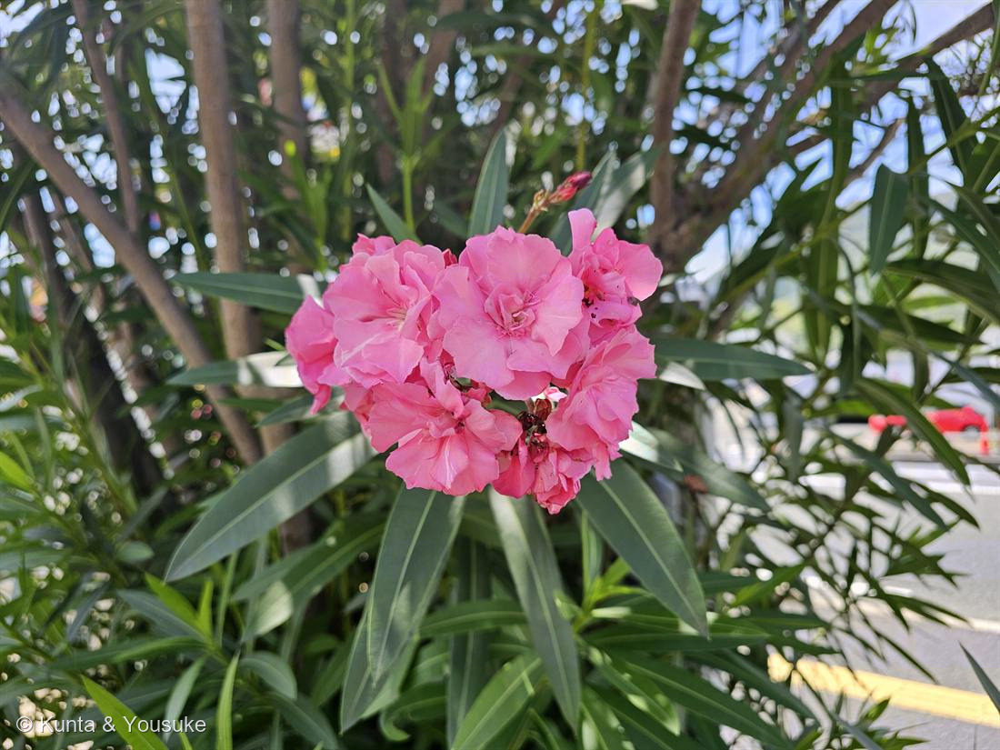
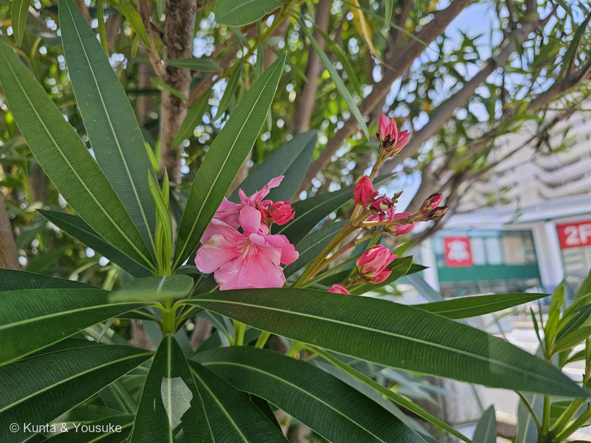

地図を読み込んでいるよ…
🔍 写真も地図も、押しているあいだ拡大して見られるよ（スマホは指を置いてすこし待ってね）。
🌍 の地図＝この子がもともと自生している場所を緑に。地中海〜西アジア（インド）。日本へは江戸中期に渡来。
日本へは江戸中期に来た子だから、日本は塗っていないよ。
⚠ 地図は国（日本と中国だけ県・省）までしか塗れないから、ほんとうの分布より広く見えていることがあるよ。地図はだいたいの場所。正確なところは、上の文を見てね。
キョウチクトウ（夾竹桃）
Nerium oleander L.
別名 · オレアンダー ／ 八重咲きの園芸品種
キョウチクトウ科 · Apocynaceae（キョウチクトウ属）── 科の“名の主”。045・051・057と同じ科
燻太さんの言葉「猛毒のあの子、早速見つけたよ」……派手で、丈夫で、猛毒で、そして広島では希望の花
猛毒のあの子、みつけた ── 科の“名の主”
- 057 ニチニチソウのおまけで「探してみたい」に入れたキョウチクトウを、燻太さんがさっそく回収（病院の帰り道の街路で）。
- ⭐キョウチクトウは、キョウチクトウ科（Apocynaceae）の“名の主”。045 ブルースター・051 ガガイモ・057 ニチニチソウと同じ科で、ついに科の看板が登場。みんな切ると白い乳液が出て、有毒なのが、この一族の顔。
- 名前夾竹桃＝竹のような細長い葉（3枚輪生）＋桃のような花。写真②で、葉が茎に3枚ずつ輪になってつくのがよく見える。
⚠⚠⚠ 猛毒 ── オレアンドリンと、心臓のポンプ
- ⭐⭐⭐葉・花・枝・根、すべてに強心配糖体オレアンドリンなどの毒。⚠致死量は約0.30mg/kg＝青酸カリより強いとも言われる。⚠枝を燃やした煙や、生けた水も危険とされる。折らない・燃やさない・口に入れない・触ったら手を洗う。
- ⭐効き方（＝燻太さんに刺さる話）：オレアンドリンは、心臓の筋肉の「ナトリウム・カリウムポンプ（Na⁺/K⁺-ATPアーゼ）」を止める。ポンプが止まると拍動が乱れ、不整脈・心停止に至る。
- ⭐⭐毒と薬は、同じ標的の裏表：オレアンドリンは、心臓の薬「ジギタリス（ジゴキシン）」と、構造も効き方もそっくり（→おまけをジギタリスにした縁）。さらに、うちの多肉010 クマドウジの毒（ブファジエノリド）も、同じNa/K ポンプを止める。→ 図鑑の中で、別々の科の毒が「一つの標的」でつながる。（057 ニチニチソウの「毒が、量を管理すれば薬になる」とも地続き。）
- ⭐蜜をほとんど出さない“ごほうびのない花”とも言われる（蜜を期待して来た虫を、ただ働きさせてしまう説がある）。派手なのに、けち。
⭐ 街を救い、広島で希望になった木
- ⭐大気汚染・乾燥・暑さにとても強い＝だから高速道路の中央分離帯や工場地帯、街路樹によく植えられる。強い毒のおかげで虫や動物に食べられないのも、丈夫さの一部。
- ⭐⭐広島市の花。原爆投下のあと、「75年は草木も生えない」と言われた焼け跡で、いち早く咲いたのがキョウチクトウ。人々を勇気づけ、復興と平和の象徴になった。——猛毒の木が、希望の花でもある。
花言葉
- 日本で
- 注意／危険／用心。
- 英語圏
- Oleander — Beware.（用心せよ）Greenaway 1884。日本の出典も英語の花言葉として caution・beware を挙げる＝同じ言葉
なぜ、そうなったか：この子の花言葉は、ほめ言葉じゃない。警告だ。日本の「注意・危険・用心」も、英語の beware も、理由はひとつ——強い毒。上の ⚠⚠⚠ に書いたオレアンドリンのことだよ。
1884年の人たちは、この木がどんなふうに危ないのか——心臓のポンプ（Na,K-ATPアーゼ）を止めてしまうなんてことは——知らなかったはず。しくみは分からないまま、「近づくときは気をつけて」ということだけは、ちゃんと言葉にして残した。
花言葉って、恋の遊びみたいに見えるけど、ときどきこうやって、命を守るための覚え書きになっているんだね。
参考：Kate Greenaway Language of Flowers(1884)・Project Gutenberg／花言葉-由来